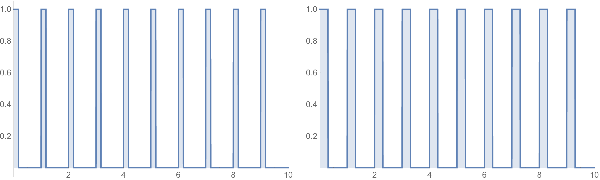

Raspberry Pi Drone
14.12.2016
After becoming interested in autonomous drones, I began to wonder if it was possible to build a drone using a Raspberry Pi as the primary flight controller. Googling around, I discovered I was not the only one with such a thought: ZDNet made a RasPi Zero controlled drone and various hobbyists have tried it before. A friend and I decided that we wanted to push the limits and see if we could eliminate as many non-RasPi components as possible.
The problem of using the Raspberry Pi as the primary flight controller is one of electronic communication. Most (if not all) drones available on the market use brushless motors to spin the propellers - they are efficient, near silent, and generate less friction and heat than their brushed counterparts. Unfortunately, they require an AC signal to operate, so each motor is equipped with an Electronic Speed Controller (ESC) to convert DC power from the onboard LiPo battery into a signal that the motor can use. For any practical usage, we have to be able to control the speed of the motor, particularly for something like a drone that requires near instantaneous speed changes. This is where things get interesting.
ESCs take a Pulse-Width-Modulation (PWM) signal to determine how fast the motor should be spinning. The signal itself is a 300Hz square wave where the width of each pulse affects motor speed:
The graph on the left has the power on for 18% of the cycle, whereas the graph on the right has the power on for 30%. This is how the speed is controlled without the frequency ever changing. If the powered pulses are around 1ms long, the motor will be off. At 2ms, it will be at max power, at 1.5ms, 50%.
A computer like the RasPi is fully capable of producing a PWM signal by turning a GPIO pin on and off. However, the RasPi is computer running an operating system instead of a simple microcontroller. This means that the RasPi has a CPU which is executing many threads simultaneously, including the one driving the GPIO pins! That means if there is any hangup in the processor, potentially due to poorly written software or an automatic update, our generated PWM signal could be disrupted. Where 1ms is the difference between off and full throttle, it is easy to see how things could get messy very quickly.
Sure, we could just replace the RasPi with an Arduino and use something like Arducopter, but that takes all the fun out of it. To drive the ESCs, we outsource the PWM generation to a servo driver, specifically the Adafruit 16-Channel 12-bit PWM Servo Driver [PCA9685]. This nifty piece of hardware takes a signal from the GPIO pin and generates a corresponding PWM signal for the ESCs. Since it has an onboard clock, it won’t get hung-up on RasPi processes.

Then comes the final hurdle of drone design: stability. We elected to mount an Inertial Measurement Unit (IMU) to the drone (on top of some foam padding) to receive gyroscopic data. This is sent directly to the RasPi to a python program to stabilize the drone with a PID loop.
We had originally planned to 3D-print a lightweight drone frame, but since my printer only has a 6”x6” printing floor, the joints between segments ended up being too weak and snapping apart when the motor was spinning. Instead, we elected to build the frame out of ¼” wooden rods, forming an H pattern, where each motor was mounted at the end. The middle segment was filled with a sheet of acrylic to mount the electronics, while the battery was strapped on with velcro. I had some spare drone feet lying around, so they were just zip-tied on. Ultimately, this design ended up being too heavy for sustained flight, so this needs to be redone.
While testing the drone, we tied down each leg to prevent any catastrophes. After calibrating, we attempted to cut the drone (nick-named Bert) free, but it ended up crashing almost immediately. I am still working on Bert and will post updates as they come.